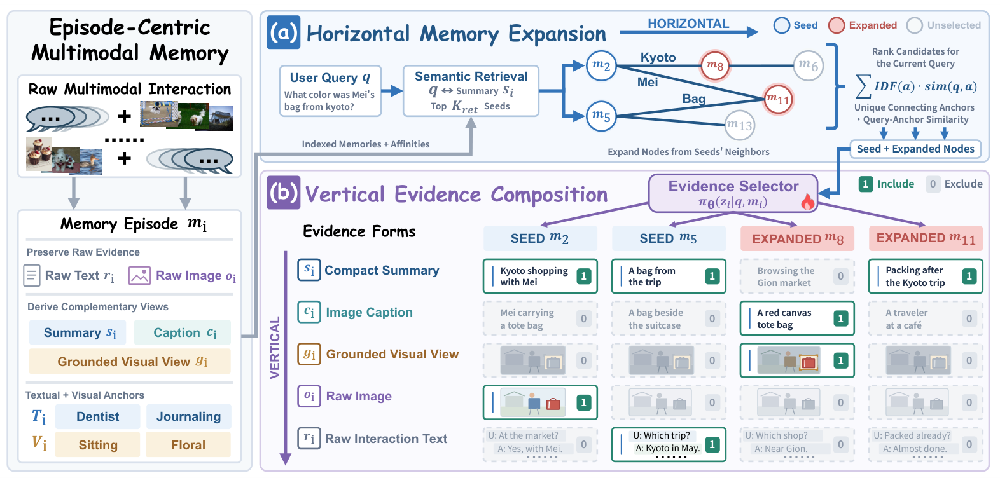

Preserve the episode
Keep raw text and images alongside summaries, captions, focused visual views, and modality-aware anchors.
Episode-centric memoryMultimodal agent memory
Remember beyond the closest match.
Bring forward only the evidence that matters.
HiVe-Mem: Interleaving Horizontal Memory Expansion and Vertical Evidence Composition for Multimodal Agents
Episode-centric memory. Graph-guided recall. Learned evidence selection.
fewer tokens
vs. the most efficient multimodal competitor*memory benchmarks
Mem-Gallery · WorldMemArena · H2HMemcomplementary evidence forms
composed independently for each memoryevaluated base models
Qwen3-VL-4B · GPT-5-mini transfer*Manuscript Table 1; benchmark-averaged input + output tokens. See the comparison and protocol.
The idea
A relevant episode can sit beyond the nearest semantic match. And even a relevant memory rarely needs to be read in full.
Keep raw text and images alongside summaries, captions, focused visual views, and modality-aware anchors.
Episode-centric memoryFollow textual and visual anchor connections to recover complementary episodes beyond semantic retrieval.
Horizontal expansion →A lightweight learned selector chooses which evidence forms each retrieved episode contributes to the answer.
Vertical composition ↓
See the distinction
The question changes what is useful. A trip name may need a short summary; a bag’s color may need a focused visual view.
Illustrative example. The selections below explain the mechanism; they are not live model predictions.
Useful evidenceA caption and a focused view preserve the bag’s color without the full scene.
The evidence
Higher average answer quality with substantially lower token consumption across three multimodal benchmarks.
| Multimodal method | F1 ↑ | LLM-Judge ↑ | Tokens (M) ↓ | Token footprint |
|---|---|---|---|---|
| M2A | 28.42 | 43.89 | 18.492 | |
| MIRIX | 27.66 | 47.78 | 8.622 | |
| MMA | 28.19 | 48.35 | 15.752 | |
| MemVerse | 24.14 | 45.42 | 7.812 | |
| HiVe-Mem Ours | 32.32 | 57.96 | 0.658 |
F1 and LLM-Judge are on a 0–100 scale. Tokens sum input and output consumption in millions for each benchmark; “average” is the arithmetic mean across benchmarks, not a per-query count. Reductions compare HiVe-Mem with the lowest-token competing method in the selected view.
Values are transcribed from Table 1 of the supplied manuscript. The comparison displays its five multimodal methods. The selector is trained on Qwen3-VL-4B-Instruct; GPT-5-mini uses the transferred selector without retraining. WorldMemArena uses the Lifelong subset.
These are reported paper results, not new measurements from this checkout. Paper settings use 5 semantic seeds, 2 expanded episodes, graph degree 4, and λ = 0 for the main results. Current release defaults differ; consult the repository’s training settings before reproduction.
Run settings ↗Build with HiVe-Mem
Explore the method, build a memory bank, or train an evidence selector on three supported benchmarks.
# Linux · Python 3.10+
git clone https://github.com/ViktorAxelsen/HiVe-Mem.git
cd HiVe-Mem
bash scripts/install.sh
source .venv/bin/activate
cp .env.example .env
Configure model services in .env, then follow the README to prepare data and build memories.
For your research
If HiVe-Mem informs your work, please cite the paper. The arXiv ID is pending.
@article{hivemem2026,
title = {{HiVe-Mem}: Interleaving Horizontal Memory
Expansion and Vertical Evidence Composition
for Multimodal Agents},
author = {Zhang, Haozhen and Liu, Bohan and Bao, Jianzhu
and Liu, Qingyuan and Yue, Haodong and Li, Xiao
and Lim, Zi Pong and Wang, Wenya},
journal = {arXiv preprint arXiv:TBD},
year = {2026}
}